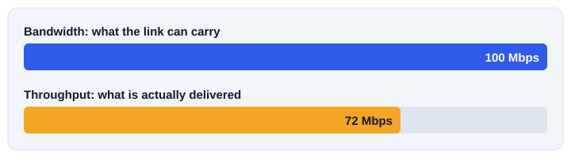

1. What bandwidth is
Bandwidth is the amount of data a connection can potentially carry over time. It is usually written in bits per second, for example 100 Mbps or 1 Gbps.
Think of a road between two towns. More lanes mean more vehicles can travel at once. In the same way, more bandwidth means the link can carry more data at once.
A 1 Gbps link is 1,000,000,000 bits per second on paper. Real performance depends on conditions, which is why the next topics matter.
2. Measuring bandwidth
| Unit | Name | Bits per second |
|---|---|---|
| bps | bits per second | 1 |
| Kbps | kilobits per second | 1,000 |
| Mbps | megabits per second | 1,000,000 |
| Gbps | gigabits per second | 1,000,000,000 |
To compare two links, put them in the same unit. 1 Gbps equals 1,000 Mbps, so a 1 Gbps link has ten times the capacity of a 100 Mbps link.
3. Bits and bytes
Network speeds use bits. File sizes use bytes. One byte is 8 bits. Watch the letter case: a small b means bits and a capital B means bytes.
| Written | Means |
|---|---|
| Mbps | megabits per second |
| MB/s | megabytes per second |
So a 100 Mbps link can move about 12.5 megabytes each second in the best case, before overhead and other losses.
Worked example
How long would an 800 MB file take on a 100 Mbps link at its full rate?
This is the best case. Real downloads take longer because the delivered rate is lower than the capacity.
4. Bandwidth of common links
| Connection | Typical bandwidth | Use |
|---|---|---|
| Fast Ethernet | 100 Mbps | Older and simple local networks |
| Gigabit Ethernet | 1 Gbps | Most modern local networks |
| Wi-Fi | Varies with the standard and conditions | Wireless devices |
| Fiber Internet | Can reach very high rates | High speed Internet access |
Internet providers advertise plans such as 20 Mbps, 100 Mbps or 1 Gbps. That number is the rate of the service, and the speed you see can be lower.
6. Bandwidth and throughput

| Bandwidth | Throughput |
|---|---|
| Capacity of the connection | Data actually delivered |
| Set by the technology or service plan | Changes with current conditions |
| Example: a 100 Mbps link | Example: 72 Mbps measured |
A road can have many lanes and still be jammed. Bandwidth is the number of lanes. Throughput is the traffic that is really moving.
7. Why it matters
- Video streaming: a steady flow of data, and higher quality needs more.
- Large transfers: downloads, backups and software updates finish faster.
- Many users: a network with more people needs more total capacity.
- Cloud services: work stored online depends on data moving smoothly.
Network administrators plan bandwidth by thinking about users, devices, applications, busy times and future growth.
8. Quick check
What does bandwidth describe?
The capacity, or nominal data rate, of a connection.
What is the difference between Mbps and MB/s?
Mbps is megabits per second. MB/s is megabytes per second, and one byte is 8 bits.
How many times bigger is 1 Gbps than 100 Mbps?
Ten times, since 1 Gbps equals 1,000 Mbps.
Does a 100 Mbps plan guarantee 100 Mbps on every device?
No. Bandwidth is shared, and conditions can lower what is delivered.
What is the difference between bandwidth and throughput?
Bandwidth is capacity. Throughput is the data actually delivered.